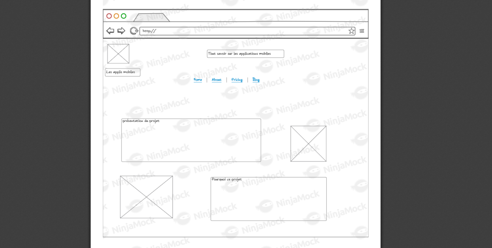
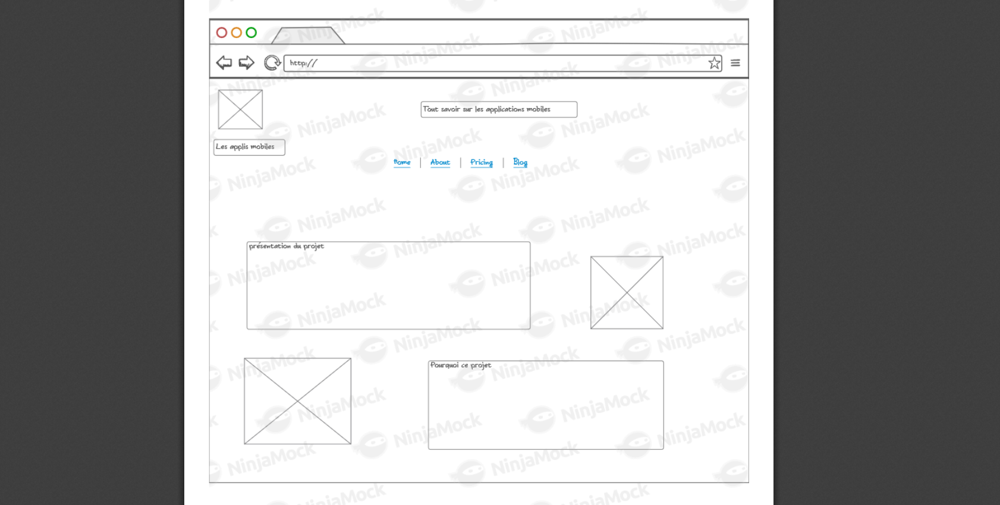
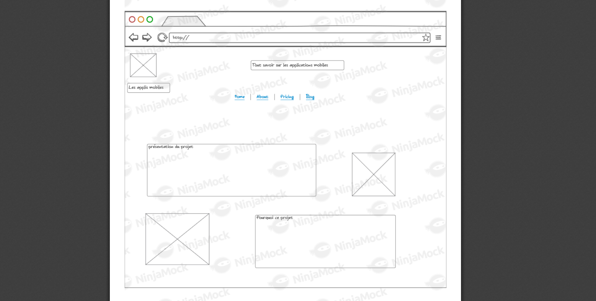

Nous avons commencer par réaliser l'arborescece du site afin de pouvoir en découper les différentes sous page, à l'aide de l'outilis Cacoo. Par la suite, nous avons fait un maquettage complet de chaque page du site sur NinjaMock.
Pour valider le premier semestre de DUT informatique, l'un des projets à mener à bien est le développement d'un site web. Nous avons, par trinome, effectué des recherches sur un domaine ed l'informatique, à savoir le développement d'application mobiles. Nous avons ensuite programmer le dit site web afin de pouvoir exposer nos recherches à ce sujet.

Nous avons commencer par réaliser l'arborescece du site afin de pouvoir en découper les différentes sous page, à l'aide de l'outilis Cacoo. Par la suite, nous avons fait un maquettage complet de chaque page du site sur NinjaMock.
Le site à été développer selon une chartre graphique dans les tons bleu. Nous avons cependant créer un bouton "mode nuit" grâce à certaines propriétées de HTML5 et CSS3.
La partie la plus technique du site est en javascript, en JQuery pour être précis. Nous avons utilisé certaines propriété du JQuery afin de masquer le texte et de ne pas saturé la page. Il suffit de cliquer sur une fleche pour afficher ou cacher la totalité des informations.